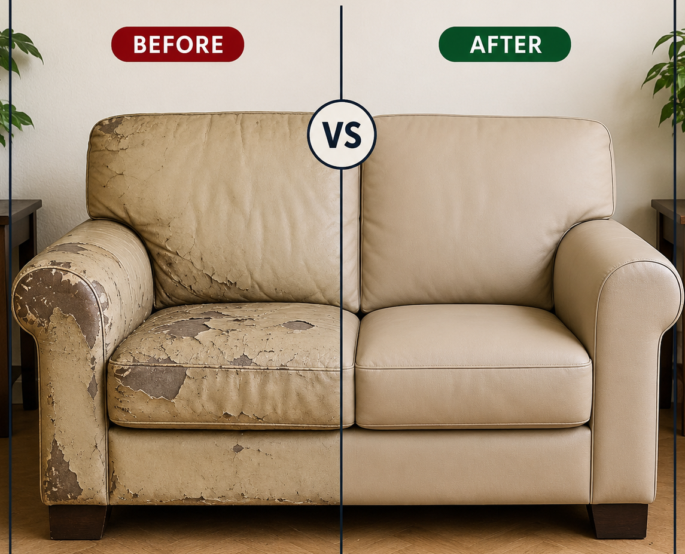

OUR PREVIOUS WORK
See the Difference Our Sofa Repair Makes
Browse a few examples of sofa restoration, upholstery and furniture repair work.


for Sofa Repair at Home in Noida? Athar Sofa Repair Center provides doorstep sofa repair services across all Noida sectors, Greater Noida, and Noida Extension.
Our skilled craftsmen visit your home with the required tools and materials to repair your sofa without the hassle of transporting it.

Whether you need sofa repair at home, sofa upholstery, leather sofa repair, wooden sofa repair, sofa cum bed repair, or custom loose covers, we offer reliable doorstep services across Noida, Greater Noida, and Noida Extension.
Repair damaged, broken, or sagging sofas. We fix frames, springs, foam, cushions and stitching.
Book ServiceGive your old sofa a fresh look with quality fabrics, leatherette and designer upholstery materials.
Book ServiceCustom-made loose covers tailored to fit your sofa with stylish, washable and durable fabrics.
Book ServiceCustom cushion covers with quality fabrics and modern designs to complement your sofa.
Book ServiceRestore cracked, torn or faded leather sofas with repair, stitching, foam replacement and touch-up.
Book ServiceWe repair folding mechanisms, hinges, locks, wheels and frames for smooth operation.
Book ServiceRepair recliners, lounge chairs and sofa chairs including upholstery, foam and frame repairs.
Book ServiceRepair broken frames, loose joints, polishing and structural issues in wooden sofas.
Book ServiceRefresh dining furniture with upholstery, cushion, foam and wooden frame repair.
Book ServiceForget the inconvenience of moving heavy furniture. Our technicians come to your home, inspect the sofa, provide a free quotation and carry out the repair with professional tools and quality materials.
Most doorstep sofa repairs are completed at your home. For major structural work, we inform you in advance if workshop repair is required.
From booking to final quality check, we keep the process simple and transparent.
Call us or fill out the enquiry form.
Our expert visits at the scheduled time.
We inspect the sofa and provide an estimate.
Most work is completed at your doorstep.
We ensure the repair is completed properly.
Browse a few examples of sofa restoration, upholstery and furniture repair work.
At Athar Sofa Repair Center, we believe your favorite sofa deserves a second life. Instead of spending thousands on new furniture, our expert technicians restore old, damaged and worn-out sofas with quality materials and professional craftsmanship.
We provide doorstep sofa repair services in Noida, making the entire process convenient and hassle-free. Whether it's a broken frame, sagging cushions, torn fabric, leather damage, or complete sofa upholstery, our experienced team handles every project with care.
Customer satisfaction, affordable pricing and quality workmanship are at the heart of our service.
"I wanted my old sofa repaired without moving it anywhere. The team came to my home in Sector 76, Noida and repaired the broken frame and changed the foam. The sofa now looks almost new."
— Amit Sharma, Noida"We got our 5-seater sofa reupholstered at home. They had a wide range of fabrics, and the finishing was excellent. The work was completed on time and at a reasonable price."
— Neha Gupta, Greater Noida"My leather sofa had several cracks and torn areas. Sofa Repair Center restored it beautifully at my home. The quality of work exceeded my expectations."
— Rohit Verma, Noida ExtensionWe proudly offer doorstep sofa repair services across:
Contact Sofa Repair Center today for reliable doorstep sofa repair services across Noida, Greater Noida and Noida Extension.